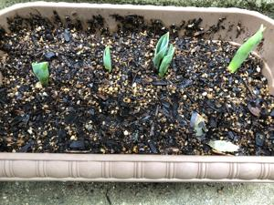

うるがいの話 ある日
最新: 音が割れる【うるがいの話 ある日】とは 一日だけのプログです
『うるがいの話』の最新一日だけのプログで、通信料が少なく経済的だ。カニの画像をクリックすると全ての日付が載る『うるがいの話』サイトを表示します
|
|
【うるがいの話】 うるがい(ｳﾙｶﾞｲ urugai)とは、『もずくがに』の名前でとても大きくなります。 |
|---|---|
|
|
【カミマヤーの話】 猫のことを方言でマヤーといいます。カミマヤー（kamimayaa）とは、神の猫のことです。 |
|
【タナガーの話】 たながー（ﾀﾅｶﾞｰtanagaa）とは手長えびのことで、何種類かあり大きいのは車 エビぐらいになります。 |

|
【ぶながぁの話】 ぶながー(bunagaa)とは、赤い髪の毛、赤い身体、そして身長は１ｍ２０ｃｍ ぐらい、川の蟹を食べているの目撃された。場所は沖縄県国頭郡大宜味村のと ある村僕の隣近所に住んでいる爺さんから、聞いた話です。 |
|
|
【ギーマの話】 ギーマ(giima)とは、山原の里山に咲くスズランに似た、 花を付けます。実は食べられます、 気が付くと口の周りが紫になっています。 |
2022年01月24日 (月）音が割れる
18:02

毎年恒例のチューリップ、今回は冷蔵庫が生協の物で一杯なので入れないでし
ばらく、常温で放置しそのまま植えた。そのせいか、成長は遅い気がする。ま
気長に待つことにする。イェスタディの工工四の対応にはまってしまって、こ
の前、造った『ニニ・ロッソ 夜空のトランペット』をユーチューブにアップ
すべく動画を編集したところ『音が割れる』！、ン、なに、なんで？と悩む。
この前子供に動画を編集するのに、『Windowsムービーメーカーを使えば字
幕の編集もできるよ、ウィンドウズに標準でついているよ』とアドバイスをも
らったので、無声の動画と音声を合体させてみようと思い付き『ムービーメー
カー』を使うべく、ソフトを調べると無い。で、ネットでダウンロードできる
か探す。直ぐにとあるサイトでダウンロードできそうである、ところが３種類
アプリがある。おや、何が違うのとさらに検索すると『【詐欺注意】Windows
ムービーメーカーはダウンロードするな！料金請求の報告も！』とある。
辞めた、さらに調べると『２０１７年１月に配布・サポート終了』となり今は
ダウンロードできないことが分かった。・・・と書いている途中、気づくこの
パソコンは２０１６年１２月に購入したので、・・・あった！、がここに至る
まで疲れてしまった。ところで、動画ソフトを変えて改めて録画したがやはり
音が割れる、トランペットの音は割れるのである（パソコン２号でも検証済）
せっかくなので、ユーチューブにアップをした。副業は、先週土曜日の参加人
数９６人から増えず、いまだ次のステップへ進まず、と書いたところ今確認す
ると１０８名になっていた。そして、＜地域Ⅾ✕人材育成セミナー開始のお知
らせ＞2/2（火）18:00から毎週火曜日zoomで開催します。（全8回）
が、１７時２２分に投稿されていた、イヨいよ。暖かい日なので風呂掃除をす
る。
１７時４６分 ビットコインの総資産 ￥１１、５１５↓